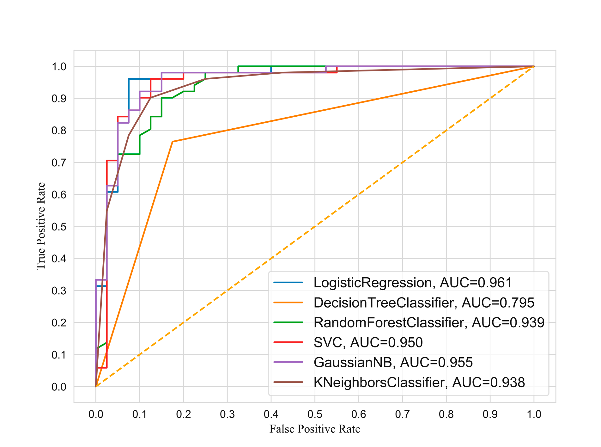
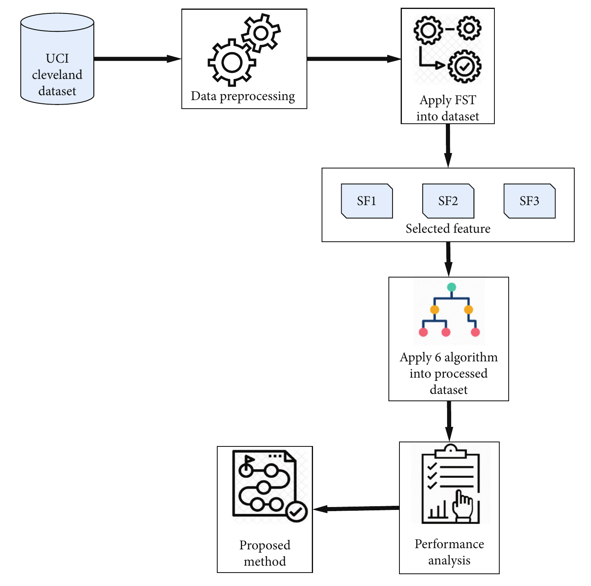
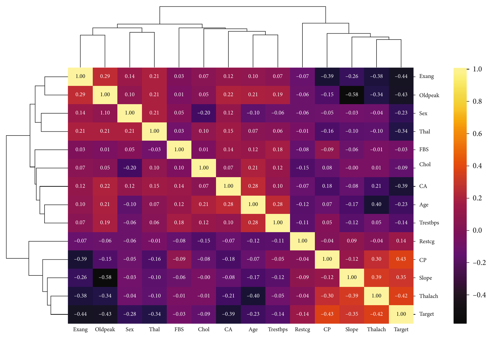

This published study (BioMed Research International, 2023) tested six machine learning models for early heart disease prediction on 303 patient records from the UCI Cleveland dataset. It has ten authors, and Niloy Biswas is the first. A support vector machine on nine selected features scored best at 94.51% accuracy, and logistic regression followed at 93.41%.

Cardiovascular disease causes about 17.9 million deaths a year, 32% of all deaths worldwide according to the WHO. Finding it early lowers mortality, so the paper asks which machine learning model, and which clinical features, can flag heart disease reliably at an early stage.
The dataset is the UCI Cleveland heart disease data: 303 patient records with 13 features and a binary target. The features are age, sex, chest pain type (cp), resting blood pressure (trestbps), cholesterol (chol), fasting blood sugar above 120 mg/dl (fbs), resting ECG (restecg), maximum heart rate (thalach), exercise-induced angina (exang), ST depression (oldpeak), the slope of the peak exercise ST segment, the number of major vessels colored by fluoroscopy (ca) and the thallium stress test result (thal).
Preprocessing replaced four incorrect values in ca and two in thal, then scaled every feature with StandardScaler to mean 0 and variance 1. The data was split 70/30 into training and test sets.
Three feature selection methods ranked the 13 features. ANOVA put exang (70.95), cp (69.77) and oldpeak (68.55) on top. Chi-square ranked thalach (188.32), oldpeak (72.64) and ca (70.89) highest. Mutual information favored cp (0.17), thal (0.14) and ca (0.11).
From these rankings the team built three feature subsets: SF1 with all 13 features, SF2 with 10 features (dropping trestbps, fbs and restecg), and SF3 with nine features (age, sex, cp, thalach, exang, oldpeak, slope, ca and thal). Each of the six models was trained and tested on every subset, and scored on accuracy, sensitivity, specificity, AUROC and log loss.

Test accuracy in percent on the 91 held-out records.
| Model | SF1 (13 features) | SF2 (10 features) | SF3 (9 features) |
|---|---|---|---|
| Logistic regression | 93.41 | 93.41 | 93.41 |
| Support vector machine | 90.11 | 89.01 | 94.51 |
| Gaussian naive Bayes | 89.01 | 90.11 | 90.11 |
| Random forest | 87.91 | 86.81 | 84.61 |
| K-nearest neighbors | 83.52 | 92.31 | 91.21 |
| Decision tree | 78.02 | 76.92 | 75.82 |
The support vector machine on SF3 was the best single result: 94.51% accuracy, 94.87% sensitivity, 94.23% specificity, AUROC 94.95 and log loss 0.31. Logistic regression was the steadiest model, at 93.41% on all three subsets. It had the best AUROC (96.08, on SF3) and the lowest log loss (0.27, on SF2 and SF3). The paper concludes that the support vector machine and logistic regression performed best, and argues the approach could support early, low-cost heart disease prediction in clinical settings.
The decision tree was the weakest model, with accuracy of 75.82 to 78.02 and log loss between 7.59 and 8.35. The ROC figure above shows the nine-feature subset: logistic regression 0.961, Gaussian naive Bayes 0.955, support vector machine 0.950, random forest 0.939, K-nearest neighbors 0.938 and decision tree 0.795.
The abstract labels the 94.51% model as random forest; the results section, ROC curves and comparison table identify it as the support vector machine, which also matches the repository code.
Chest pain type, exercise-induced angina, ST depression, maximum heart rate, the number of colored vessels and the thallium result carry the most signal. Each ranks near the top under at least one of the three methods. Fasting blood sugar, resting ECG, resting blood pressure and cholesterol score low under all three, which is why the smaller subsets drop them.
Dropping them did not hurt the best models. Logistic regression stayed at 93.41% on all three subsets, and the support vector machine and K-nearest neighbors reached their best accuracy on the smaller ones. In this dataset, disease cases also concentrate in middle age, roughly 41 to 54.
The paper’s correlation heat map shows the same split. Almost all features are only weakly correlated with each other, so few of them are redundant enough to remove. Against the target, chest pain type, maximum heart rate and slope correlate most positively, exercise-induced angina, ST depression and the number of colored vessels most negatively, and fasting blood sugar, cholesterol, resting blood pressure and resting ECG the least.

The dataset is small, with 303 records and a 91-record test set, so the results should be tested on larger real-world patient data. The authors name deep learning as future work. The data is available from the corresponding author on request, and the notebooks behind the experiments are in the GitHub repository.
In this study, a support vector machine on nine selected features was best, at 94.51% accuracy. Logistic regression came close at 93.41% and held that score on all three feature subsets. The decision tree was the weakest at 75.82 to 78.02%.
Chest pain type, exercise-induced angina, ST depression, maximum heart rate, the number of colored vessels and the thallium stress result ranked highest across ANOVA, chi-square and mutual information. Fasting blood sugar, resting ECG, resting blood pressure and cholesterol scored low under all three.
The study uses the UCI Cleveland heart disease dataset: 303 patient records, 13 clinical features and a binary target for disease or no disease.